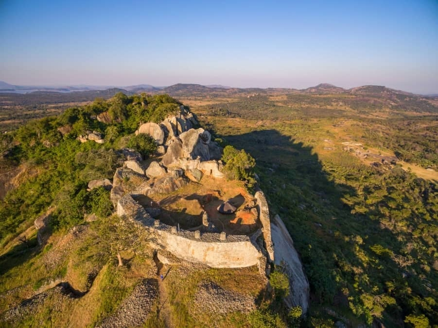

The Ancient Kingdom of Great Zimbabwe
The Great Zimbabwe Ruins are the largest ancient stone structures south of the Sahara, built between the 11th and 15th centuries without mortar. The site reflects advanced engineering, trade networks, and cultural sophistication.
Highlights
- UNESCO World Heritage Site
- The Great Enclosure and Conical Tower
- Hill Complex with panoramic views
- Dry-stone architectural mastery
- Center of ancient trade and power
Gallery

Aerial view of the Great Zimbabwe complex

Exterior stone walls
Ancient palace ruins

Iconic stone architecture

The iconic Zimbabwe Bird

Ancient stone buildings
Chapel of Saint Francis of Assisi
Masvingo • Half Day • Up to 8 Guests
Built during the Second World War by Italian civilian internees, the St Francis of Assisi Chapel is renowned for its peaceful atmosphere and exceptional hand-painted interior murals.
Highlights
- WWII-era construction by Italian civilian internees
- Rare European religious murals in Zimbabwe
- Intimate and peaceful chapel setting
- Unique historical significance
- Located near Great Zimbabwe
Gallery

Exterior of St Francis of Assisi Chapel

Interior of the chapel

Interior murals
Lake Mutirikwi Recreational Park

Lake Mutirikwi Recreational Park
Lake Mutirikwi Recreational Park, formerly known as Lake Kyle Recreational Park, is scenically one of the most attractive parks in the country. Its major attraction is a thriving white rhino population. The absence of predators and elephants allows for undisturbed vegetation and a flourishing game population. The best way to view the game is on horseback. The park is further enhanced by beautiful thatched self-catering lodges.
Activities
- Game Drives
- Fishing
- Rhino Trails
- Boating
- Picnics